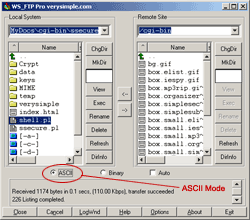

SimpleSecure: Server Setup
SimpleSecure: Server Setup
 To begin, unzip the SimpleSecure.zip archive using your preferred ZIP compression software. Be sure to preserve the directory structure within the zip file.
Step One: Check Path To Perl
(This step is required only on *NIX servers)
The first line of ssecure.pl contains the path to Perl. The default value is:
#!/usr/bin/perl
If the path to Perl is different on your server, you must edit this line to reflect the correct path.
Step Two: Upload Directory Structure:
The following directory structure is contained in the .zip archive. The directory structure should be preserved while uploading the files to your server via FTP.
Note: If you already have the Perl module MIME::Lite installed on your server, then it is not neccessary to upload the MIME directory. It will not affect anything if you choose upload this version, however.
ATTENTION: All files should be uploaded to your server in ASCII mode. Many FTP programs will default to BINARY upload. You must upload all files in ASCII mode or the script will fail to run.
Step Three: Change Permissions
(This step is usually necessary only on *NIX server.)
Update the following directory permissions:
Additionally, change the following file permissions:
SimpleSecure is now installed and ready to be configured...
© copyright 1997-2004, verysimple, inc.